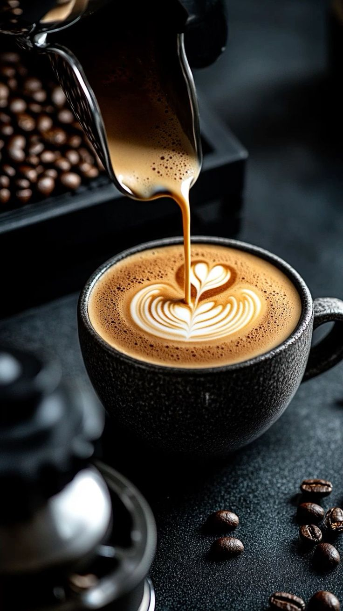
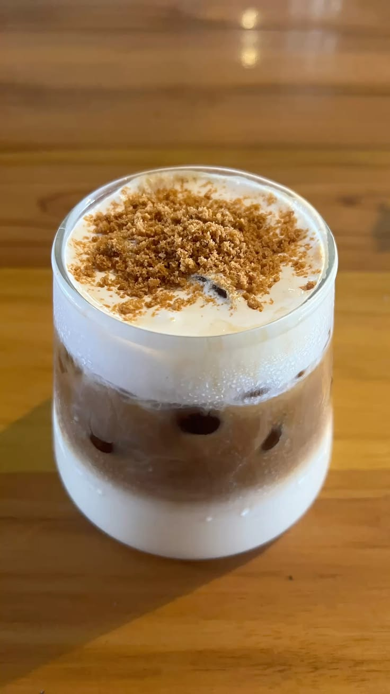

Latte Caramel
Espresso dan susu segar dengan saus karamel, ditutup whipped cream. Manisnya pas untuk yang baru mulai suka kopi.
Rp25.000 / gelas 250 ml
UMKM Pekalongan
Kopi lokal pilihan untuk teman belajar, bekerja, dan berdiskusi.

Espresso dan susu segar dengan saus karamel, ditutup whipped cream. Manisnya pas untuk yang baru mulai suka kopi.
Rp25.000 / gelas 250 ml

Kopi susu dengan sentuhan karamel butterscotch dan taburan gula aren, manis dan creamy untuk memulai hari.
Rp20.000 / gelas 250 ml
Senin - Jumat: 09.00 - 23.00
Sabtu - Minggu: 08.00 - 02.00
Kopi Inz
Jl. Raya Sragi No. 47
Pekalongan, Jawa Tengah
Pesan lebih dulu supaya kopimu siap saat kamu sampai di kedai.
WhatsApp: Hubungi kami melalui WhatsApp